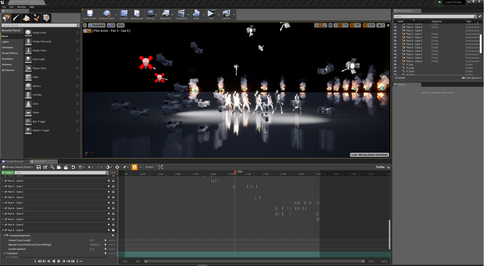

My project is a remake of Michael Jackson's MV "Thriller." The part I focus on re-creating is the dance part. There are two primary reasons why I choose to remake this MV: one personal and the other technical. I believe Michael Jackson is the person who founded the idea of Music Video. I consider the Thriller MV as the most iconic and classic MV of all time because it is so stylish and outstanding in terms of the story and the visual. The MV used scriptwriting and filmmaking techniques I find very effective even today. The opening of the MV where Michael Jackson turns into a wolf man at a date turns out to be a movie. Michael Jackson and his girlfriend are watching the movie in the theater. The twist in plot surprises the audience.
Such an amazing and classic MV has one major weak point I try to solve, which is the second reason of my remaking. I used the wide aspect ratio to revive the dynamics of dancing part, which was weakened by the three by four aspect ratio in the original MV. Nowadays, cinema camera technology enables filmmakers to choose any aspect ratio. Last year, Oscar nominated foreign language film "Cold World" uses the three by four aspect ratio the same as Michael Jackson's Thriller. Because three by four is closer to square, it is the perfect aspect ratio to shoot portraits. I am a big fan of wide screen aspect ratio and frequently used it in my own production because wide screen aspect ratio such as 2.35:1 is cinematic in a way where it can effectively exaggerate the visual relationship between characters and environment. An excellent application of wide screen aspect ratio is "La La Land." The wide screen aspect ratio is so perfect in representing the horizontal landscape of all the dancers in the Thriller MV. The composition looks visually balanced and satisfying.
The animation is realized in Unreal 4. There are two methods I use in creating the animation, which worth mentioning. Firstly, I use the conventional filmmaking practice for better editing. I render the full animation out for each camera angles, which gives me more freedom in editing. Although it is true and necessary for directors to draw storyboards before hands, as a director you can't anticipate the cut points you imagine in storyboards would be seamless in the actual editing, especially if you are shooting complex scenes such as dancing. Secondly, I use the conventional three points lightings techniques to fake three dimensionality on 2D screen. I use five spotlights: front key light, front fill light, back key light, back fill light, high rim light.
In the future, if I have the resource as well as money and the photo-realistic computer graphic becomes possible. I will recreate the entire Thriller MV in a wide-screen version. I foresee a possible future in which filmmakers like me would like to remake old movies and video in different aspect ratio or higher definition, to horror the classics and make the classics truly perfect. There might be a moral debate about whether we should do that. Should we believe that classics are meant to be kept the original way or should we improve it through modern technology? For me, I am greatly inspired by classic movies and use the inspirations in my own movies. I am not saying that classic movies can not be surpassed. New movies should surpass classics and become the new classics, which is a constant development. However, what bother me the most is that as a filmmaker we can not stand our loved classic films and videos to be imperfect. The four by three aspect ratio of the Thriller MV really bothers me, since you would see how effective and beautiful to use a wide-screen aspect ratio works.
View PresentationThis is the second iteration of my final project. In this iteration, I experiment with ten characters. I import each one of them and the corresponding animations. However, the lightings still look werid. All the characters are in default lit model, but why they look so bright. There are no strong light source facing them.
1. What is the meaning of our life? What do you hope to achieve? How do you want people to remember you after your death?
2. How can we incorporate digital technology to enhance the meaning of our life.
All the articles make me think of the question that what the meaning of our lives is and how we can incorporate digital technology to enhance the meaning of our lives. We humans are super-ambivalent. We want to remember our deceased friends or family members through digital technology but once talking to the digital avatars we are still skeptical that they aren't real enough to be "them." We know the digital world isn't real. We still believe protesting with our digital avatars might be more influential than the real world.
I remember a scene from Avengers: Age of Ultron where Vision kills the last Ultron. As robots, both Vision and Ultron express their confusion about human. Vision says "Humans are odd; they think order and chaos are some-how opposite and try to control what won't be." "But there is grace in their failure. I think you miss that," Vision tells Ultron. Indeed, we humans vacillate and might achieve nothing in the end, which makes us who we are. Ultron says "They(humans) are doomed." Vision replies "but thing isn't beautiful because it lasts." In fact we didn't achieve nothing. We do achieve something in our lives which only exists for a limited time.
A few problems I found
1. The cinematic camera actor cannot be hidden. Some of the camera will be seen in the shot.
2. The default lighting setting of the material confuses me a lot. The walls are also glass material but I cannot see any reflection of the fire on the wall. At the same time, the spotlight doesn't look very obvious even if I tweak the settings and increase the intensity.
1. Why can't people just focus on the content of the message rather than who says it?
2. What would be the solution to the biased use and representation of people of color in mainstream media such as movie, game, internet etc?
For the creators who intentionally create beautiful black Sims to express their frustration over lack of diversity in the game, I think they communicate a wrong idea. I totally share and understand their frustration, however, I believe their action are based on a wrong assumption, which is the reason why I ask the first question. Why black beautiful simmers? Why do people need to accentuate "black" ?" Some people might argue that because telling their identity is important to reverse the lack of diversity. The question I want to ask is that isn't a truly equal society should pay less attention on what race you are but more on who you are. People might add too many titles in places where they don't need that many. For example, Moonlight is the first film to win Best Picture with a full African American cast. In some ways, it does deserve to celebrate, but in other ways, it looks weird. Moonlight should win the Oscar not based on the fact that the whole cast are African American. Moonlight should win the Oscar because it is a well-crafted film with excellent acting, story, cinematography, etc.
A few problems I hope to solve in later iteration.
1. When the character runs, it moves so fast that it always runs out of the place. I am not sure it is the problem of the animation or the blending animation settings.
2. When the character kicks, if I control the character to move around. It still stays in the kicking position. Once finishing the animation, it will go back to normal.
3. The character literally has zero spatial recognition, I test multiple times to see if I fall from stairs, will I fall to the ground. In fact it didn't fall.
1. In comparison to other forms of arts such as film and book, how would we think about game violence.
2. In what way is video game different from other art forms, which makes violence video game morally unacceptable?
I raise this question because I am interested in the fact that in recent years, game is finally accepted as a form of art. Throughout history, violence in literatures and movies always exist. People did raise concerns but not as intense as violent video games. Some people even celebrate violence in movie and accept it as a unique art genre, such as Quentin Tarantino's movies. Why people cannot do the same to games? What is the reason that people treat game differently? In the presentation I cite associate justice's opinion in a case about youth access to violence video game. The associate justice argues that we should grant everyone the right to any video game because video games share many literary devices and features distinctive to the medium. That means video game should be treated the same way as any other literary forms.
When I was a kid, I loved Zombie, all kinds of Zombie. I really don't know why. My favorite MV of all time is Michael Jackson's Thriller, the classic of classic. I was so delighted when I found that there are Thriller's animations on Mixamo, so I rigged my character to two of my favorite parts of the dancing.
The structure sensor is not accurate enough; a few problems still persist. For example, my hands are usually out of shapes; surfaces with complex structures such as hairs are pretty messy. Since the model is in one piece, my glass seems to "integrate" into my body.
1. Why would you play a character that is different from your gender?
2. How real do you think game is in terms of sex and relationship?
The first question is the question I always want to ask my friends who play vidoe games a lot. In the first place, I found it weird or even nasty for male gamers to play video games as "outrageously" sexy female characters. Things that make me a little even more uncomfortable are the majority of male gamers I know do spend a lot of time staying in their college dorms and playing games all days, not paying much attention on their personal hygiene or everyday appearance. They also love buying all kinds of dolls from video games or anime, which have unrealistically large chests or other sexy features. I also heard of news about people getting married to online avatars or dating with game characters. They seem to value the world of video games a lot. Although to me the world of video games are unreal, there has to be something that is so attractive in video games that some people value them even more than their real life experience.
I find some tricks on how to scan the body correctively and efficiently. When scanning my friend Yuming, I noticed that when going around her body, the sensor always lost its tracking when I went around her hands. I suspected the reason is that the machine had difficulty processing some key tracking points. When we hold our hands away from the body, the complex geometry of our fingers and the distance between our hand and body might easily confuse the machine. Therefore, my solution was every time I went around her body, I pointed the camera to her face which the sensor always tracked well and then I would scan all the part vertically. The method never got lost and it always scanned well.
The structure sensor is not accurate enough; a few problems still persist. For example, my hands are usually out of shapes; surfaces with complex structures such as hairs are pretty messy. Since the model is in one piece, my glass seems to "integrate" into my body.
1. If famous sports games such as FIFA and 2K only feature fictional characters, would you still play it?
2. How should the application of CG technology in recreating deceased actors be regulated, since the technology can be potentially used to recreate anyone?
The College Football Games article particularly interests me. I believe the reason why so many people love playing FIFA and 2K is that they can play as well-know athletes, which they never could in real life. In that case, FIFA and 2K might be the games where players clearly identify themselves not as themselves but their favorite athletes. Sarcastically, such a significant and central feature of sports game has legal problem because of publicity rights. Unlike fantasy genre games, in a way, sports games are meant to be realistic, updating players list according to real-life record. I am so curious to see what the future for these games will be. Will be the end of it?
I do believe in the near future when everyone dies, we need to sign a contract about whether we will grant people in the future the right to recreate our avatar in any ways. I believe deceased people deserve that right, since CG technology is so advanced that in the near future the technology to recreate a dead person in 3D software might be accessible to everyone. I am personally against recreating deceased actors. From a director standpoint, I direct actors so that the audiences are able to see and feel their performance and emotion in the story, which is an important part of filmmaking. However, computer are not actors because they are not people. Once the actors die, you never can replicate it no matter how advanced the technology is. The reason why I love live action films more than animations is that I can feel the actors. If I am going to direct an animation, I will apply motion capture technology as much as I can, because that is the only way I can capture the "soul" of the actor and use it in the character.
Apple Emoji is probably one of the least sexism and racism avatar creation tools on the market, not only because it has a large number of customization options but also because those options are non-binary. For example, when you start a new avatar, Emoji never asks you to choose the gender (male or female). I can feel that Apple designed the Emoji UI to be as neutral as possible. When I was picking my hairstyle, even though some hairstyles like long curly hairs are mostly used for female users, all the hairstyle settings are in fact in the same setting pool. The users have the right to choose any hairstyle they want and Apple won't arbitrarily tell that certain hairstyle or skin color should be for male/female or Asian/non-Asian. You even can make you skin color blue. Link to Screen Record
In comparison, Adobe Fuse is an arbitrary and not easy-to-use avatar creation tool. I probably can get the reason why Adobe Fuse is not easy to use. It is for more professional users like 3D modeler and game developers. However, targeting professional users still cannot justify the fact that the interface is arbitrary. Most of the customization settings are binary: short/tall, small/big, etc. The base models is really unfriendly to Asians. Knowing nothing about human anatomy, I have serious trouble making an avatar that truly reflects my physical appearance. The bone and the facial structure are optimized for non-Asian. Even though there are many specific settings I can tweak, I still have trouble. Link to Screen Record
1. What attributes of the game will influence your thoughts on whether you are playing the game as yourself or the game character?
2. Would you like to meet your online gamer friends?
The article "When We Play Video Games, Who Are We?" causes me to think about my rare gaming experiences. Although I don't play game a lot, but a few games I do remember playing is Minecraft and The Legend of Zelda. I have a clear sense of who I am playing as when I am playing games. Minecraft is a game where players have more freedom to explore and create, so I usually think I am playing as myself. For Zelda, the game features a storyline and missions, I don't feel like I am playing as myself when being told to do things in game. However, it seems an over-simplification of the larger question. When considering other factors such as the gender of characters, age, appearance, etc, I believe people will have different opinions.
The reason I ask the second question is because I am interested in how people value their online relationship in comparison to their real life relationship. I have a lot of friends who are "addictive" to video games. They have many friend groups on Discord, the chatting app specialized for gamers. I have seen some of my friends playing games with their online friends. The way how they interact and talk to their online friends when doing collaboration-intensive games such as CS Go and LOL makes me hard to believe that they are just online friends. They seem super close and know each other, however, they probably never meet in real life. Some of my friends do love to see them in real life but others do make a clear distinction between online and real-life friends. They could have close online friends but they never want to meet each others.